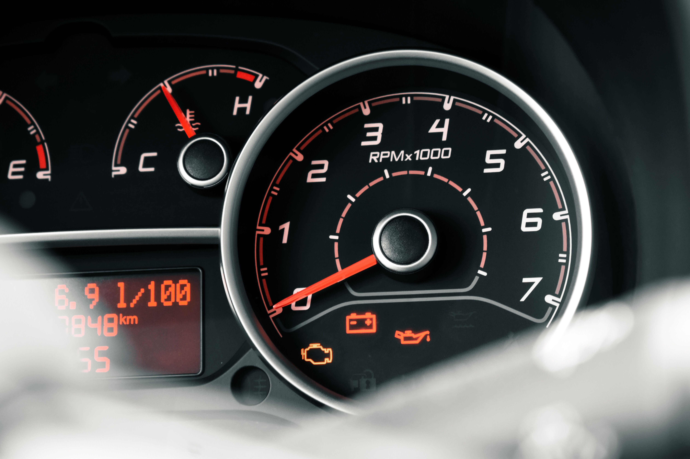

How to Clear the Check Engine Light Safely
The safest way to clear a Check Engine light is to first read the diagnostic trouble code with an OBD2 scanner and address the underlying problem. After the repair, the scanner can usually clear stored codes. Disconnecting the battery may also clear some vehicle codes, but it can reset learned settings and may not be appropriate for every vehicle.

What Does the Check Engine Light Mean?
The Check Engine light, also called the malfunction indicator lamp or MIL, is part of the vehicle's onboard diagnostic system. It can turn on when the computer detects a problem involving the engine, emissions, fuel, ignition, or another monitored system.
A Check Engine light does not identify the failed part by itself. The vehicle stores diagnostic information that can be retrieved with a compatible OBD2 scanner.
This is why simply clearing the light is different from fixing the problem that caused it.
Check the Light Before Clearing It
Before clearing any diagnostic code, record the stored trouble codes and any available freeze-frame information. This information can be useful if the problem returns later.
- Note whether the Check Engine light is steady or flashing.
- Pay attention to unusual engine noises, smells, or performance problems.
- Record the diagnostic trouble codes before erasing them.
- Save freeze-frame data if your scanner provides it.
- Check the owner's manual for vehicle-specific instructions.
If the Check Engine light is flashing, especially while the engine is running poorly, avoid treating it as a simple reset issue. A flashing light can indicate a serious condition that may damage the catalytic converter or other components.
How to Clear a Check Engine Light With an OBD2 Scanner
1. Locate the OBD2 Port
Most modern vehicles have an OBD2 diagnostic connector underneath the dashboard near the driver's side. The exact location varies by vehicle.
If you cannot find the connector, check the owner's manual or the vehicle's documentation for its location.
2. Connect the OBD2 Scanner
Plug the compatible OBD2 scanner into the diagnostic connector. Follow the scanner manufacturer's instructions for powering on and communicating with the vehicle.
Some scanners power on immediately through the diagnostic connector, while others may require the ignition to be switched to a specific position.
3. Read the Diagnostic Trouble Codes
Select the option to read diagnostic trouble codes. The scanner may display codes such as P0300, P0420, or other codes depending on the detected problem.
Write down or save the codes before clearing anything. The code is a starting point for diagnosis, not necessarily a direct instruction to replace a particular component.
4. Diagnose and Address the Cause
Use the code information, vehicle service information, and observed symptoms to investigate the cause. Depending on the code, the issue could involve sensors, wiring, ignition components, fuel delivery, emissions equipment, or mechanical components.
Do not automatically replace a part simply because its name appears in a trouble-code description. Proper diagnosis may require additional testing.
5. Clear the Stored Codes
Once the underlying issue has been addressed, use the scanner's Clear Codes, Erase Codes, or similar function.
The exact menu wording varies between scanners. Follow the instructions supplied with your particular device.
6. Turn the Ignition Off and Restart the Vehicle
After clearing the codes, follow the scanner instructions and switch the ignition off if required. Restart the vehicle and check whether the Check Engine light remains off.
If the problem has not been corrected, the light may return immediately or after the vehicle completes additional diagnostic checks.
7. Drive Normally and Monitor the Vehicle
Some emissions-related diagnostic systems require specific driving conditions before their self-tests run. After a reset, some monitors may temporarily show as incomplete.
If the Check Engine light returns, the underlying fault may still be present and should be investigated rather than repeatedly erased.
Can Disconnecting the Battery Clear the Check Engine Light?
On some older or simpler vehicles, disconnecting the battery may clear stored diagnostic information. However, this is not a universal solution and is generally less useful than using a scan tool.
Disconnecting the battery can also reset learned engine-management settings, radio presets, clock settings, or other electronic features depending on the vehicle.
Some vehicles may also require security codes, relearning procedures, or additional setup after battery power is disconnected.
If possible, use an OBD2 scanner. It allows you to read and save diagnostic information before clearing codes and avoids unnecessarily disconnecting the vehicle's battery.
Why Does the Check Engine Light Come Back?
Clearing a code does not repair the component or system that caused the original fault. If the vehicle detects the same problem again, it can store the code and turn the warning light back on.
A returning light may indicate that the original problem was not fully repaired, the wrong component was replaced, or another related fault exists.
- The original fault is still present.
- A replacement component did not solve the actual problem.
- Wiring or electrical connections still have an issue.
- A sensor is reporting another related fault.
- The vehicle has not completed all required diagnostic tests yet.
- A different fault has developed.
Common Reasons a Check Engine Light Turns On
A Check Engine light can be triggered by many different conditions. Some common examples include:
- Loose or faulty fuel cap
- Engine misfire
- Oxygen sensor problems
- Mass airflow sensor issues
- Evaporative emissions system leaks
- Catalytic converter efficiency problems
- Ignition system faults
- Fuel system problems
- Wiring or electrical faults
When You Should Not Simply Clear the Light
Clearing a Check Engine light without investigating the cause can erase useful diagnostic information. It may also make it harder to determine what happened if the vehicle is later inspected.
If the light is flashing, the engine is running very poorly, the vehicle has lost significant power, or unusual smoke or smells are present, treat the situation as more than a simple warning-light reset.
In these situations, stopping the vehicle and obtaining appropriate diagnosis may be safer than continuing to drive.
Common Check Engine Light Reset Mistakes
Clearing the Code Without Recording It
Always record diagnostic trouble codes before clearing them. The stored information may be useful for diagnosing an intermittent problem.
Assuming the Code Identifies the Exact Failed Part
Diagnostic codes usually point toward a system or condition. Additional testing may be required before identifying the actual failed component.
Disconnecting the Battery Without Checking the Manual
Battery disconnection can affect vehicle settings and learned values. Check the manufacturer's instructions before using this method.
Repeatedly Clearing a Returning Code
If the same warning returns, repeatedly clearing it does not solve the underlying problem. The vehicle should be diagnosed to determine why the fault keeps coming back.
Frequently Asked Questions
The preferred method is to use a compatible OBD2 scanner to read the diagnostic codes, address the underlying problem, and then use the scanner's clear or erase function.
Some vehicles may clear stored information after the battery is disconnected, but this varies by vehicle and can reset learned settings. Using an OBD2 scanner is generally the more informative approach.
It may clear some stored information on certain vehicles, but it is not a universal method. It can also reset learned settings and other electronic features.
No. Clearing the warning light only removes stored diagnostic information or turns off the warning temporarily. If the underlying fault remains, the light can return.
It depends on the fault and the vehicle. Some problems can trigger the light again almost immediately, while emissions and other diagnostic monitors may require specific driving conditions before the fault is detected again.
A steady Check Engine light does not always indicate an immediate emergency, but the cause should still be investigated. A flashing light, severe engine misfire, loss of power, or other serious symptoms should be treated more urgently.